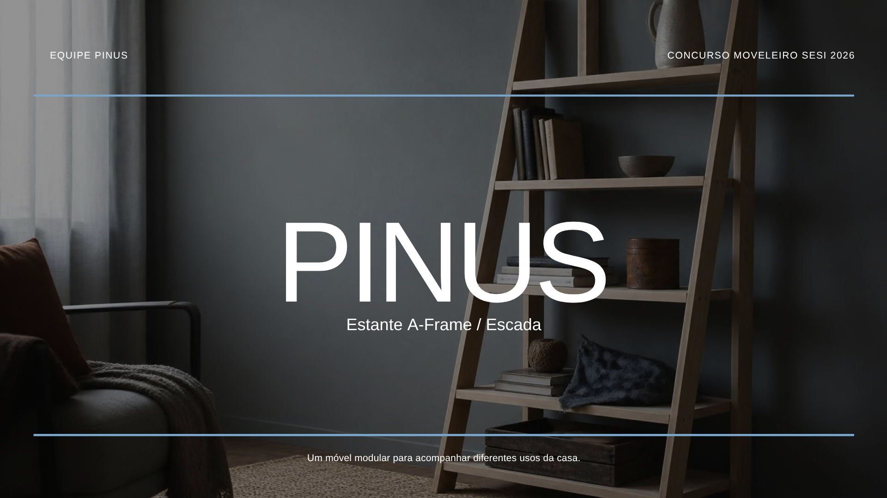
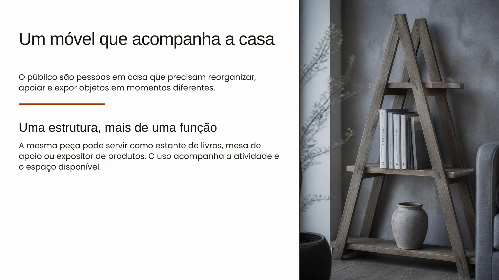
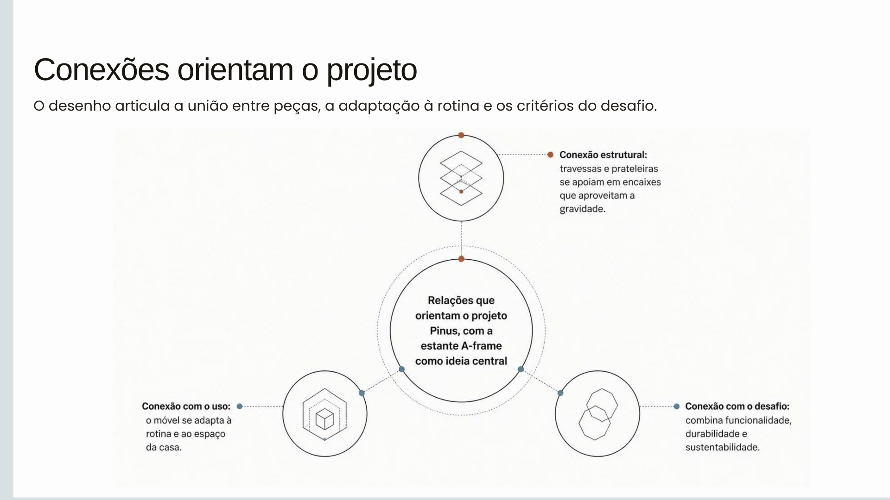
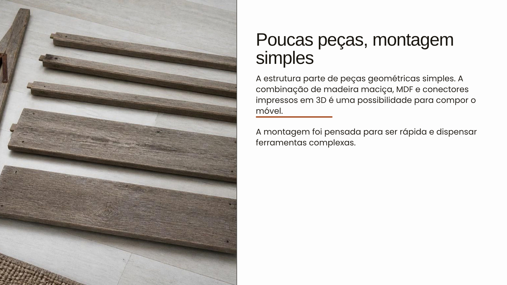
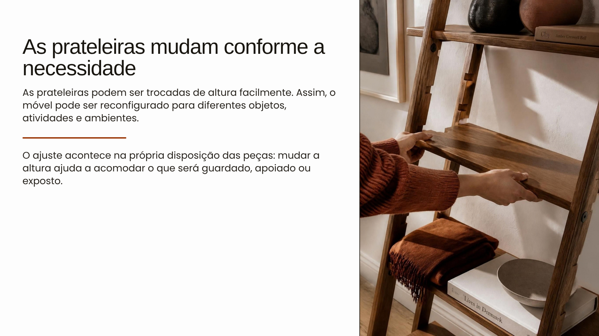
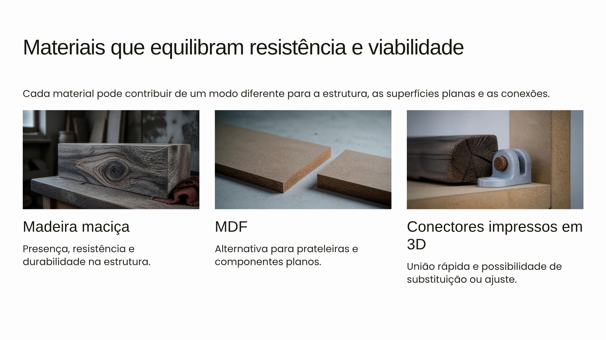
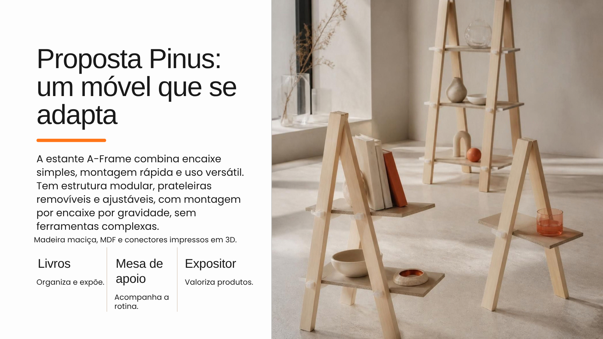

Estante de livros
Organização vertical para ambientes domésticos.

Estante A-Frame / Escada
O público são pessoas em casa que precisam reorganizar, apoiar e expor objetos em momentos diferentes.
A mesma peça pode servir como estante de livros, mesa de apoio ou expositor de produtos. O uso acompanha a atividade e o espaço disponível.

A proposta responde à falta de um móvel doméstico funcional, fácil de montar e ajustável. Também deve mudar de uso sem exigir ferramentas complexas.
NECESSIDADE REAL · FLEXIBILIDADE NO USO COTIDIANO
O desenho articula a união entre peças, a adaptação à rotina e os critérios do desafio.

A estrutura lateral forma um “A” inclinado. As prateleiras usam rebaixos ou entalhes nas extremidades para abraçar as travessas laterais.
A estrutura parte de peças geométricas simples. A combinação de madeira maciça, MDF e conectores impressos em 3D é uma possibilidade para compor o móvel.
A montagem foi pensada para ser rápida e dispensar ferramentas complexas.

A forma A-Frame pode assumir funções distintas dentro de casa, sem deixar de ser a mesma estrutura modular.
Organização vertical para ambientes domésticos.
Superfície de trabalho ajustada à altura desejada.
Apresentação de objetos, peças e materiais.
As prateleiras podem ser trocadas de altura facilmente. Assim, o móvel pode ser reconfigurado para diferentes objetos, atividades e ambientes.
O ajuste acontece na própria disposição das peças: mudar a altura ajuda a acomodar o que será guardado, apoiado ou exposto.

Cada material pode contribuir de um modo diferente para a estrutura, as superfícies planas e as conexões.

Presença, resistência e durabilidade na estrutura.
Alternativa para prateleiras e componentes planos.
União rápida e possibilidade de substituição ou ajuste.
O projeto reúne adaptação de uso, uma conexão estrutural simples e componentes pensados para manutenção e reaproveitamento.
O móvel muda de configuração e de uso conforme a necessidade.
O peso reforça o encaixe por gravidade.
Peças desmontáveis facilitam manutenção, troca e reaproveitamento.
A equipe Pinus transforma uma conexão simples em uma solução doméstica versátil.
Um móvel que se adapta: encaixe simples, montagem rápida, prateleiras removíveis e uso versátil.

A estante A-Frame combina encaixe simples, montagem rápida e uso versátil. Tem estrutura modular, prateleiras removíveis e ajustáveis, com montagem por encaixe por gravidade, sem ferramentas complexas.
Madeira maciça, MDF e conectores impressos em 3D.